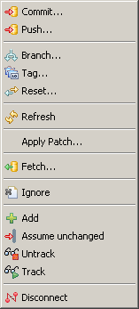
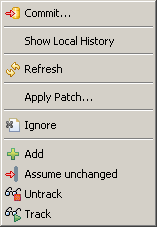

| Perspective, Views and Menus | ||
|---|---|---|
|
|
|
|
| EGit User Guide | Creating Repositories | |
Git Perspective
"Window" -> "Open Perspective" -> "Git Repository Exploring" opens the Git Repository Exploring perspective
Git Repositories View
"Window" -> "Open View" -> "Git" -> "Git Repositories" opens the Git Repositories view which is explained in detail
here.
History View
"Show In" -> "History View" on the context menu of resources under git version control navigates to the
History View.
Project Context Menu
On project nodes in navigation views (Navigator, Package Explorer etc.) the following Git actions are available:

Resource Context Menu
On resource nodes (files and folders) in navigation views the following Git actions are available:

|
|

|
|
| EGit User Guide | Creating Repositories |